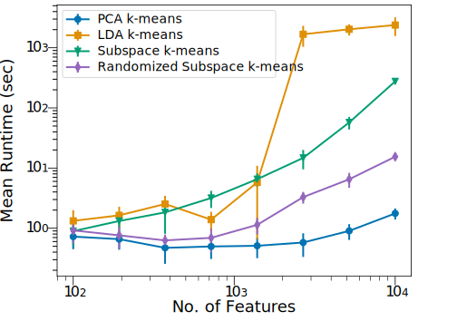
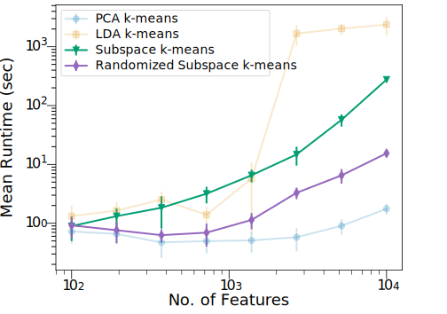
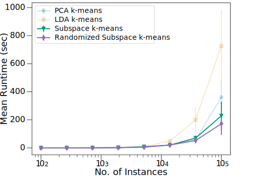
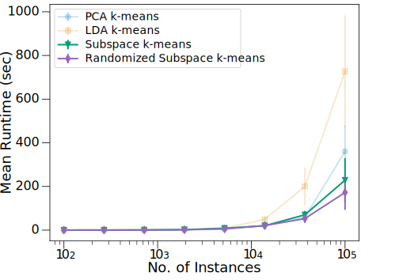
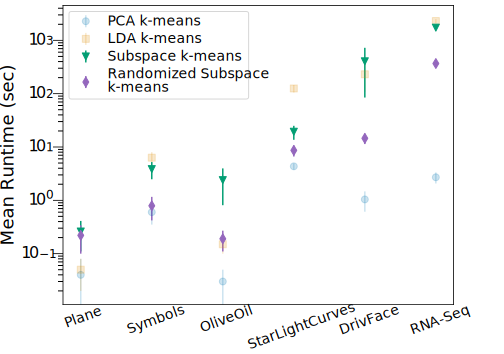
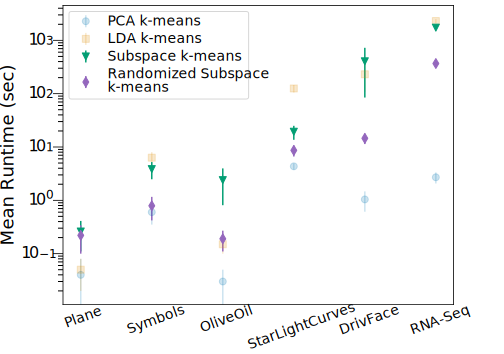

Slide Number 2
- two columns!
- with an image
- and bullet points!

Experiments
Tests
Results
Appears last
Appears first
Appears second
Runtime vs Dimension



Runtime vs Size
 


Dataset Runtimes
 

Subspace Projections